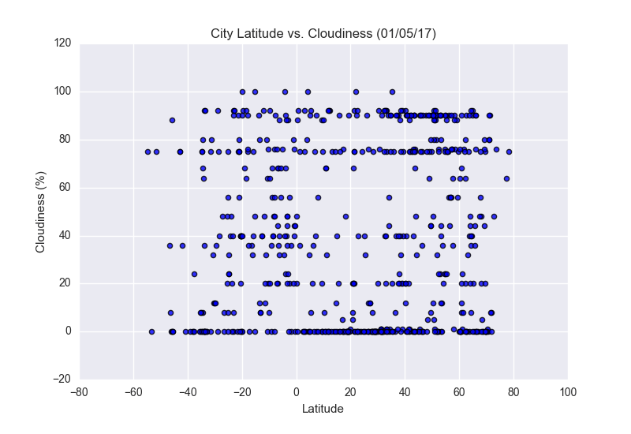

Lattitude vs. Cloudiness
Cloudiness vs Lattitude
Cloudiness scatter points appear in distinct bands. Many of the bands are multiples of 10. This suggests that the mechanism for reporting cloudiness involves binning or reporting in multiples of 10. Another possible explanantion is that when humans are asked to estimate a percentage, we often give values in multiples of 10 or 5. If human observation is involved this could explain the banding pattern.